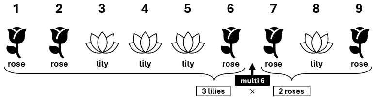

Secret Lilies and Roses
There are \(n\) flowers arranged in a line from left to right, which are numbered from \(1\) to \(n\) in that order. Each flower is either a lily or a rose. For an integer \(j\) between \(0\) and \(n\), inclusive, let \(l_j\) denote the number of lilies among the leftmost \(j\) flowers, and let \(r_j\) denote the number of roses among the rightmost \(n - j\) flowers.
Initially, only the number of flowers \(n\) is provided to you. The types of the flowers are hidden. You can obtain information on the flowers by making queries. In one query, you can perform one of the following.
Type query: Specify an integer \(i\) between \(1\) and \(n\), inclusive. You will then receive the type of flower \(i\).
Multiply query: Specify an integer \(j\) between \(0\) and \(n\), inclusive. You will then receive the value of \(l_j \times r_j\).
Your task is to find an integer \(k\) between \(0\) and \(n\), inclusive, for which \(l_k = r_k\) by making a limited number of queries. You can assume that at least one such integer exists for the arrangement of the flower types. Note that you do not need to identify the type of each flower.
Interaction
The first line of input contains one integer \(t\) (\(1 \le t \le 100\)) representing the number of test cases. After that, \(t\) test cases follow. Each of them is presented as follows.
The first line of input for each test case contains an integer \(n\) (\(1 \le n \le 100\)). After reading it, your program can start making queries. For each query, your program should write a line containing one of the following:
- “
type\(i\)” to perform a Type query by specifying an integer \(i\) (\(1 \le i \le n\)). In response, an input line containing a string eitherlilyorrosebecomes available, indicating the type of flower \(i\). - “
multi\(j\)” to perform a Multiply query by specifying an integer \(j\) (\(0 \le j \le n\)). In response, an input line containing the integer \(l_j \times r_j\) becomes available.
Your program is allowed to make up to 10 queries for each test case. This means the total number of Type queries and Multiply queries combined must not exceed \(10\). If your program makes more than \(10\) queries, it will be judged as “Wrong Answer”.
When your program identifies an integer \(k\) such that \(l_k = r_k\), it should write a line of the form “answer \(k\)” (\(0 \le k \le n\)). Note that providing the answer does not count as a query.
The input guarantees that at least one correct output exists. If there are multiple correct outputs, any one of them will be accepted.
After writing the answer line, your program should start processing the next test case. When all \(t\) test cases have been processed, the interaction stops and your program should terminate.
Notes on interactive judging:
- The evaluation is non-adversarial, meaning that the types of the flowers are chosen in advance rather than in response to your queries.
- Do not forget to flush output buffers after writing. See the “Judging Details” document for details.
- You are provided with a command-line tool for local testing, together with input files corresponding to the sample interactions. You can download these files from DOMjudge. The tool has comments at the top to explain its use.
| Read | Sample Interaction #1 | Write |
|---|---|---|
| 2 | ||
| 9 | ||
| type 8 | ||
| lily | ||
| type 1 | ||
| rose | ||
| multi 6 | ||
| 6 | ||
| multi 3 | ||
| 3 | ||
| answer 5 | ||
| 3 | ||
| multi 3 | ||
| 0 | ||
| type 3 | ||
| rose | ||
| answer 3 |
Explanation for the sample interaction #1
For the first test case, nine flowers are arranged as shown in the following figure. In response to the third query, \(l_6 \times r_6 = 3 \times 2 = 6\) is returned, and in response to the fourth query, \(l_3 \times r_3 = 1 \times 3 = 3\) is returned. Since \(l_5 = r_5 = 3\), \(k = 5\) is a correct output.

For the second test case, all three flowers are assumed to be roses.